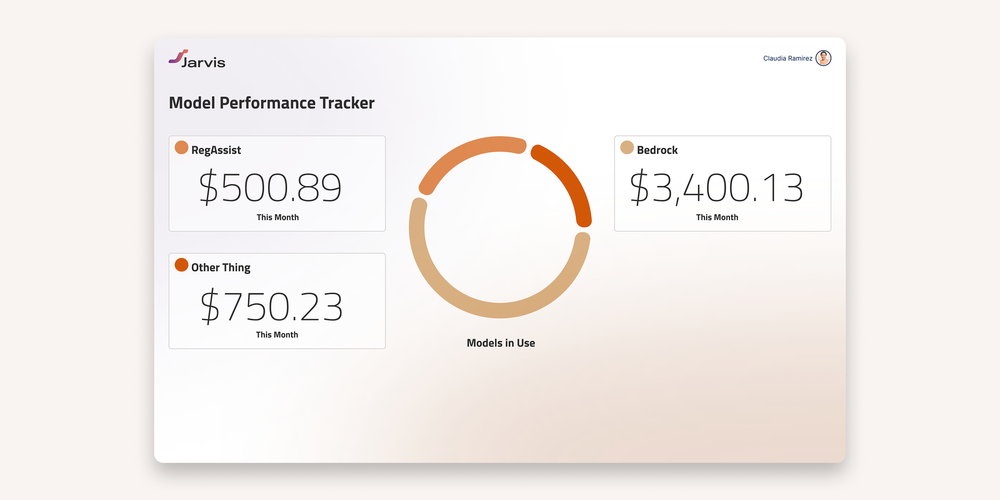
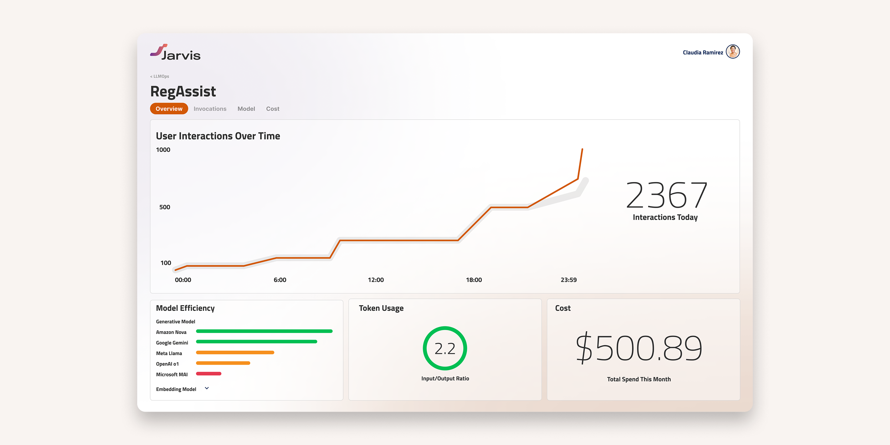

Jarvis
LLM agents scale fast. Without observability, cost, performance, and quality issues go undetected until it's too late.
Key Contributions
- Lead Designer
- Product Owner
- Front-end Dev Support
Model Tracker Overview
With multiple models in production simultaneously, understanding the cost footprint of each was the first step toward control. The Model Tracker gives teams a consolidated view of every LLM in use, with a clear cost breakdown by model so stakeholders can immediately see where spend is concentrated, spot outliers, and make informed decisions about which models are earning their place.

Model Performance at a Glance
Drilling into any individual model surfaces the metrics that matter most: interactions over time, efficiency ratings, token consumption, and monthly cost — all in one place. This view transforms raw usage data into a legible performance profile, giving teams the context they need to evaluate whether a model is delivering value or becoming a liability.

Conclusion
Without visibility into the individual agents powering your product, performance issues are invisible until users feel them. By surfacing real-time observability data across every model in the stack, teams can identify underperforming agents the moment they slip and swap in better-suited models on the fly — keeping response quality high and the user experience seamless, even as your AI infrastructure grows in complexity.